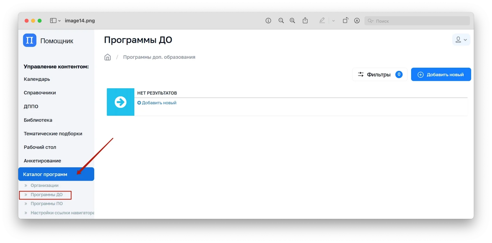

- В административной панели в меню слева выберите «Каталог программ» — вкладка «Программы ДО»
- Откроется таблица/список добавленных ранее программ ДО
«Программы» — это раздел Цифрового помощника родителя, в котором собираются и отображаются программы дополнительного образования (ДО) и профессионального обучения (ПО). Эти программы помогают пользователям (в первую очередь — родителям и учащимся) находить и выбирать подходящие направления для обучения и развития.
В автоматизированном режиме обеспечена передача сведений о программах ДО из Единой автоматизированной информационной системы сбора и анализа данных по учреждениям, программам, мероприятиям дополнительного образования и основным статистическим показателям охвата детей дополнительным образованием в субъектах Российской Федерации. Однако, при необходимости, администраторы и методисты могут добавлять программы вручную.
Для Цифрового помощника родителя
Для Цифрового помощника родителя